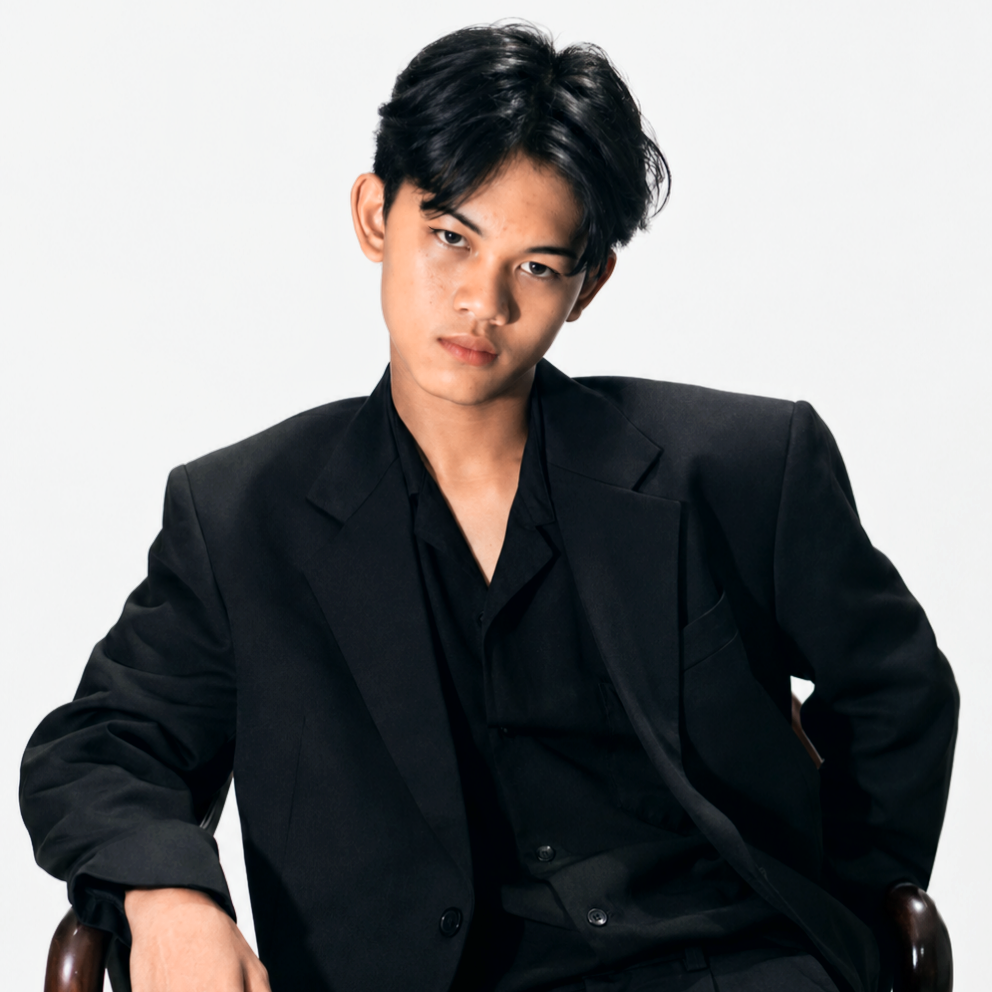

Eksplorasi tanpa batas di bidang teknologi, teknik, dan kreativitas. Belajar mandiri, bereksperimen, dan menciptakan solusi nyata.

Saya adalah individu yang berkembang melalui pembelajaran mandiri dan eksperimen langsung. Dari perakitan sound system, pengembangan web, hingga eksplorasi teknik listrik dan otomotif, setiap proyek adalah kesempatan untuk mengasah kemampuan dan memperluas wawasan.
Pendekatan saya menggabungkan pemahaman teknis yang solid dengan kreativitas praktis. Saya percaya bahwa pengetahuan sejati datang dari mengerjakan proyek nyata, memecahkan masalah konkret, dan terus beradaptasi dengan perkembangan teknologi.
Perakitan dan konfigurasi sound system untuk berbagai kebutuhan event dan dokumentasi.
Eksplorasi mekanik kendaraan, modifikasi ringan, dan perawatan sistem kendaraan bermotor.
Pembuatan website responsif dan interaktif menggunakan HTML, CSS, dan JavaScript.
Proyek eksperimental dalam sistem kelistrikan, pengkabelan, dan sistem arus listrik.
Dokumentasi proyek dan eksplorasi komposisi fotografi untuk berbagai keperluan.
Pembuatan model 3D untuk prototyping dan visualisasi konsep desain.
Terbuka untuk diskusi, kolaborasi proyek, atau sekadar bertukar ide tentang teknologi dan kreativitas.